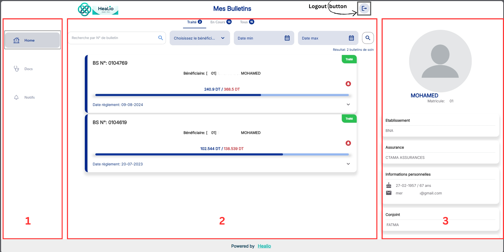

L'application se compose de trois sections principales :
1 :Panneau de gauche: Accès à la navigation via le menu (Home, Docs, Notifd).
2 :Panneau central: Affichage du contenu de la page sélectionnée.
3 :Panneau droit: Accès au profil de l'utilisateur.

Capture d'écran des Panneaux de l'application
2. Page d'accueil
La page d'accueil affiche les réclamations médicales de l'utilisateur organisées
en trois colonnes :
1 :"Traité" : Réclamations traitées.
2 :"En cours" : Réclamations en cours.
3 :"Tous" : Toutes les réclamations.
4 : Recherche par N° de bulletin
Les filtres disponibles sont :
5 :Bénéficiaire
6 :Date minimale
7 :Date maximale
Capture d'écran des réclamations médicales
3. Page des Prestataires
Cette page permet à l'utilisateur de rechercher des prestataires de santé en appliquant des filtres comme :
Région
Spécialité
Capture d'écran des prestataires avec filtre
Aprés l'utilisateur pris un filter il peut chercher des prestataires de santé par nom :
Capture d'écran des prestataires avec filtre par spécialité
4. Page des Notifications
Cette page affiche une liste des notifications concernant les réclamations médicales. En cliquant sur une
notification, vous serez redirigé vers la réclamation correspondante sur la page d'accueil.